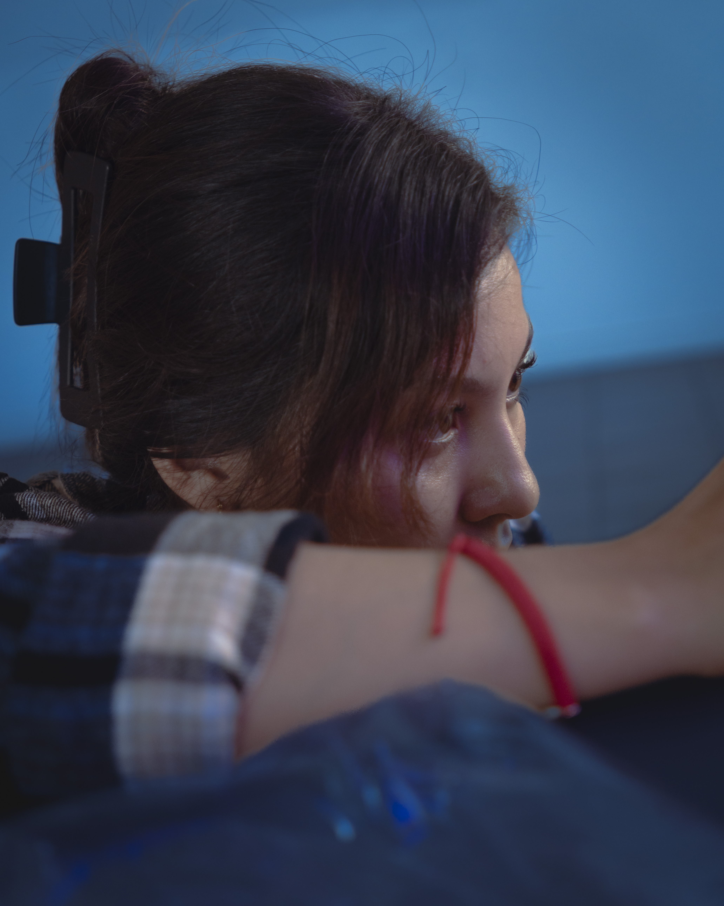
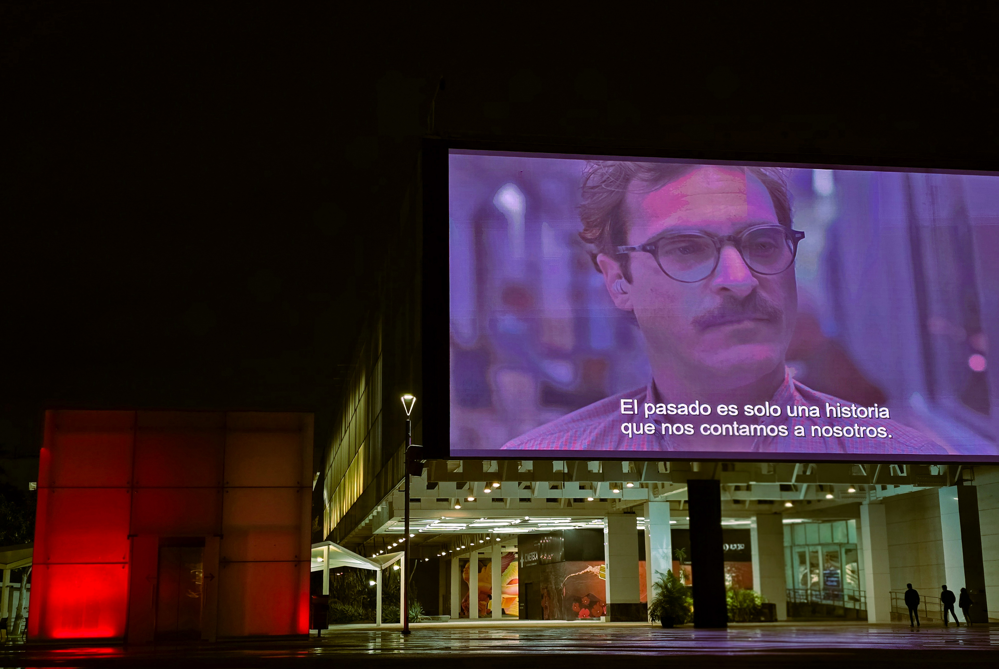
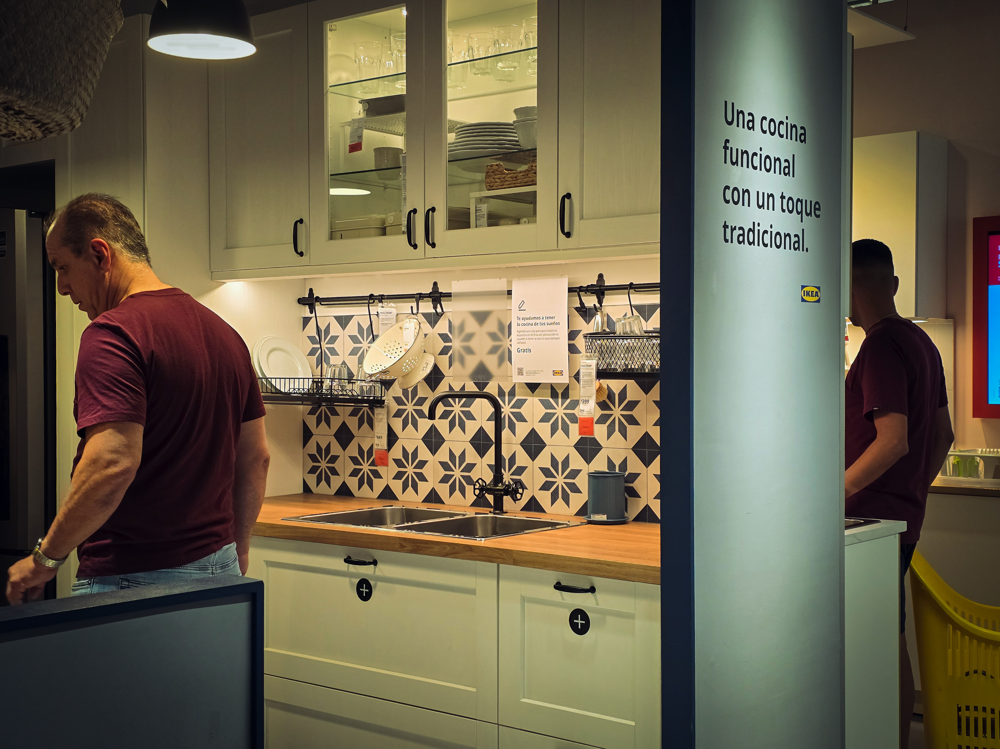
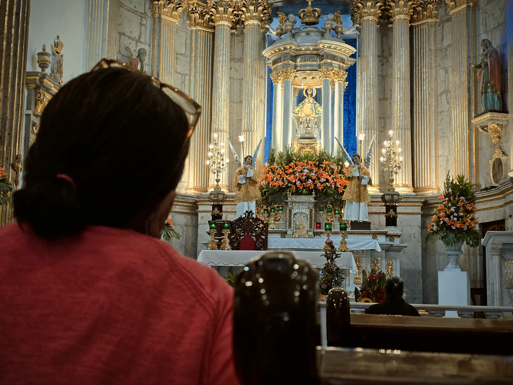
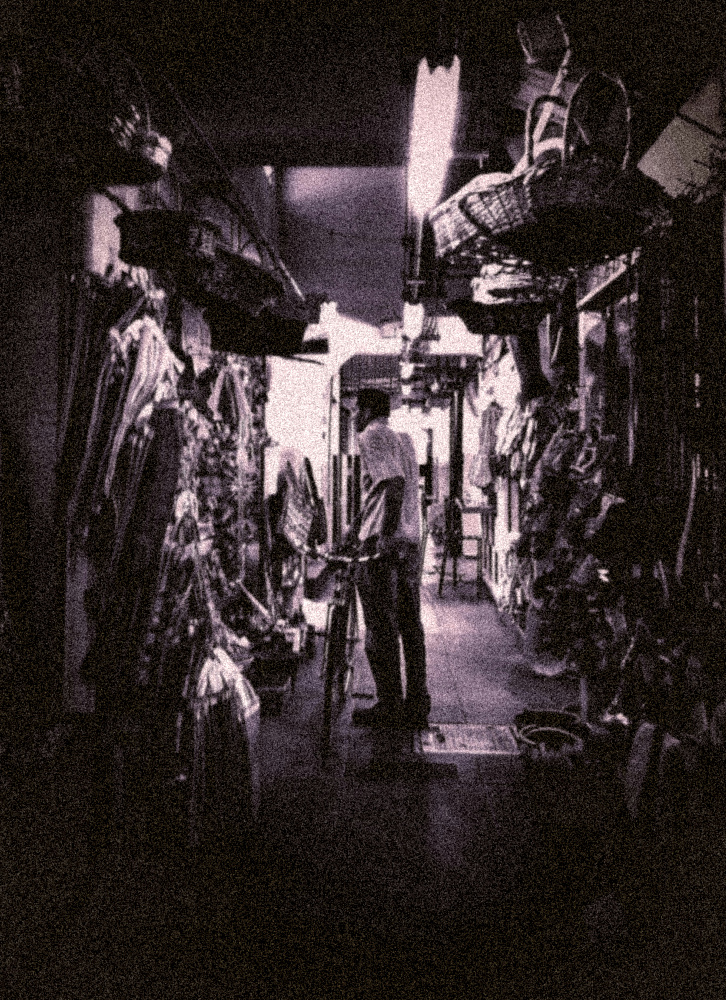
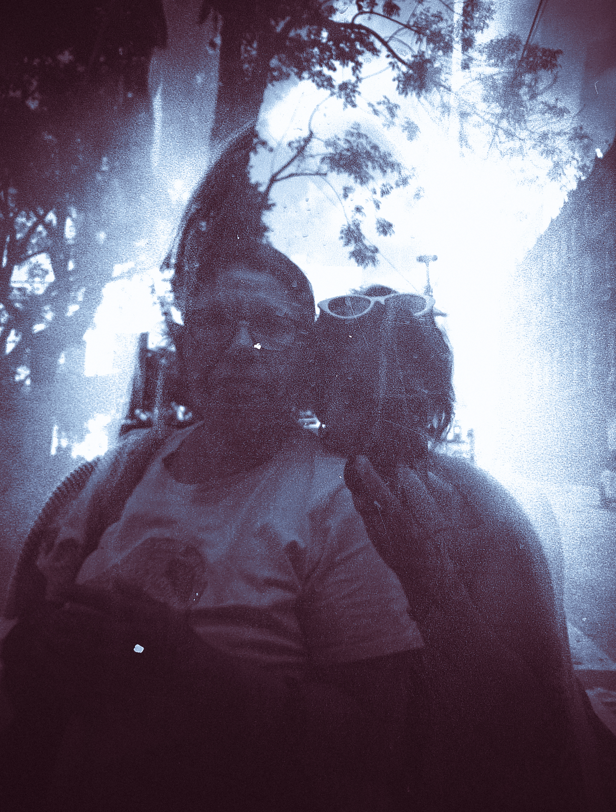

"La forma en que lo vi."
Me interesó guardar la imagen exactamente como la estaba viendo en ese momento.

Soy estudiante de Creatividad Digital.
Me interesan la fotografía, el cine y el video.
Una pequeña colección de fotografías, videos y momentos desde mi perspectiva.

Quería capturar la sensación de estar ahí sin tener que hacer nada.

No estaba buscando una fotografía perfecta. Solamente quería guardar cómo se veía ese lugar.

Esta fotografía nació de un momento sencillo que llamó mi atención.
Me interesó guardar la imagen exactamente como la estaba viendo en ese momento.

A veces una imagen puede hacer que un momento vuelva a sentirse presente.

Otra imagen que forma parte de mi manera de mirar.

Una fotografía también puede ser una forma de volver a un momento.

Esta es otra pequeña parte de las cosas que quiero guardar.
Hay momentos que prefiero recordar en movimiento y no solamente en una fotografía.
JENN - 2026